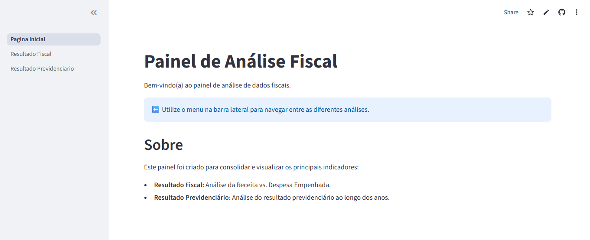

A Arquitetura Fundamental: Scripts Centrais da Aplicação
Esta seção aborda os scripts que são a espinha dorsal do projeto. Eles lidam com a inicialização da aplicação, o carregamento de dados e as funções utilitárias compartilhadas, garantindo que o dashboard funcione de maneira coesa e eficiente.
1. Página Inicial (dashboard/Pagina_Inicial.py)
Este script é o ponto de entrada da aplicação, responsável pela configuração global e pela apresentação da página de boas-vindas.

# dashboard/Pagina_Inicial.py
import streamlit as st
# --- Configuração da Página (APENAS AQUI) ---
st.set_page_config(
page_title="Painel Fiscal - Início",
page_icon="📊",
layout="wide"
)
# --- Conteúdo da Página ---
st.title("Painel de Análise Fiscal")
st.write("Bem-vindo(a) ao painel de análise de dados fiscais.")
st.info("⬅️ Utilize o menu na barra lateral para navegar entre as diferentes análises.")
st.header("Sobre")
st.write("""
Este painel foi criado para consolidar e visualizar os principais indicadores:
- **Resultado Fiscal:** Análise da Receita vs. Despesa Empenhada.
- **Resultado Previdenciário:** Análise do resultado previdenciário ao longo dos anos.
""")
Clique aqui para ver a explicação para cada linha de código
import streamlit as st: Importa a biblioteca principal do Streamlit, que é a base para a criação de toda a interface do usuário. O alias st é uma convenção padrão.st.set_page_config(...): Comando executado uma única vez para definir configurações globais da aplicação.page_title: Define o texto que aparece no separador do navegador.page_icon="📊": Define o ícone (favicon) do separador, utilizando um emoji.layout="wide": Configura a página para utilizar toda a largura do ecrã, ideal para dashboards.st.title(...)est.header(...): Renderizam títulos de diferentes níveis hierárquicos.st.write(...): Exibe texto simples ou, como no segundo uso, um bloco de texto formatado com Markdown (a lista com * é renderizada como uma lista com marcadores).st.info(...): Apresenta uma mensagem informativa numa caixa de destaque, guiando o utilizador a usar a barra de navegação.
2. Camada de acesso e cache de dados (dashboard/load.py)
Este módulo é o coração da lógica de dados. Ele centraliza o carregamento, a limpeza, a transformação e a fusão dos dados brutos, além de implementar o cache para otimização de desempenho.
# Este arquivo centraliza todo o carregamento e manipulação inicial de dados. Usar o @st.cache_data aqui é perfeito.
# dashboard/data_loader.py
import streamlit as st
import pandas as pd
import os
from utils import DATA_PATH # Importa a constante do nosso outro módulo
@st.cache_data
def carregar_dados_fiscal():
"""Carrega e prepara os dados do Resultado Fiscal."""
path_receita = os.path.join(DATA_PATH, "receita.csv")
path_despesa = os.path.join(DATA_PATH, "despesa.csv")
try:
# --- Lógica de limpeza do 'receita.csv' ---
def clean_numeric_brl(value_str):
if isinstance(value_str, str):
value_str = value_str.strip('"').replace(
'.', '').replace(',', '.')
return pd.to_numeric(value_str, errors='coerce')
return pd.NaT
df_receita_raw = pd.read_csv(
path_receita, encoding='utf-8', header=None, skiprows=1)
split_data = df_receita_raw.str.split(',', n=1, expand=True)
split_rest = split_data.[1]str.strip('"').str.split('","', expand=True)
df_receita = pd.DataFrame()
df_receita['Ano de Exercício'] = pd.to_numeric(split_data)
df_receita['Valor Efetivado Ajustado'] = split_rest.[1]apply(
clean_numeric_brl)
# --- Carregar Despesa ---
df_despesa = pd.read_csv(
path_despesa, encoding='latin1', sep=';', decimal=',', thousands='.')
# --- Merge e Cálculo ---
df = pd.merge(
df_receita[['Ano de Exercício', 'Valor Efetivado Ajustado']],
df_despesa],
on='Ano de Exercício', how='inner'
)
df.rename(columns={
'Valor Efetivado Ajustado': 'Receita Fiscal',
'Valor Despesa Empenhada': 'Despesa Fiscal'
}, inplace=True)
df = df - df
df['Ano de Exercício'] = df['Ano de Exercício'].astype(int)
return df
except FileNotFoundError as e:
st.error(f"Arquivo não encontrado: {e.filename}.")
return None
except Exception as e:
st.error(f"Ocorreu um erro ao processar os arquivos fiscais: {e}")
return None
@st.cache_data
def carregar_dados_previdenciario():
"""Carrega, limpa e transforma os dados do resultado previdenciário."""
caminho_arquivo = os.path.join(DATA_PATH, "resultado_previdenciario.csv")
try:
df = pd.read_csv(
caminho_arquivo,
encoding='latin1', sep=';', decimal=',', thousands='.'
)
df = df.dropna(how='all')
if df.empty:
st.error("O arquivo CSV previdenciário está vazio.")
return pd.DataFrame(columns=)
df_melted = df.melt(
id_vars=, var_name='Ano', value_name='Valor')
try:
df_melted['Ano'] = df_melted['Ano'].astype(int)
except ValueError as e:
st.error(
f"Erro ao converter a coluna 'Ano' para número: {e}. Verifique o cabeçalho do CSV.")
return pd.DataFrame(columns=)
df_melted['Valor'] = pd.to_numeric(df_melted['Valor'], errors='coerce')
df_melted = df_melted.dropna(subset=['Valor'])
return df_melted
except FileNotFoundError as e:
st.error(f"Arquivo não encontrado: {e.filename}.")
return pd.DataFrame(columns=)
except Exception as e:
st.error(
f"Erro ao carregar ou processar o arquivo CSV previdenciário: {e}")
return pd.DataFrame(columns=)
Clique aqui para ver a explicação para cada linha de código
@st.cache_data: Este decorador instrui o Streamlit a armazenar o resultado da função em memória. Em execuções subsequentes do script (causadas por interações do utilizador), se a função for chamada novamente, o resultado em cache é retornado instantaneamente, evitando a releitura e o reprocessamento lento dos ficheiros, o que é crucial para a performance.carregar_dados_fiscal(): Esta função demonstra uma pipeline de ETL (Extração, Transformação, Carga) robusta:- (a) Extração: Lê dois CSVs distintos, receita.csv e despesa.csv, utilizando caminhos construídos a partir da constante DATA_PATH;
- (b) Transformação: Executa uma limpeza complexa em receita.csv, que envolve dividir colunas concatenadas e aplicar a função clean_numeric_brl para converter texto formatado como moeda brasileira em números. Em seguida, une (merge) os dados de receita e despesa e calcula a coluna Resultado Fiscal;
- (c) Tratamento de Erros: O bloco try...except captura erros comuns, como FileNotFoundError, e exibe mensagens amigáveis ao utilizador com st.error.
carregar_dados_previdenciario(): Esta função também realiza um processo de ETL:- (a) Transformação: A operação mais importante aqui é df.melt(), que transforma o DataFrame de um formato "largo" (anos como colunas) para um formato "longo" (uma coluna para 'Ano' e outra para 'Valor'), que é o formato ideal para a maioria das bibliotecas de visualização, incluindo o Altair;
- (b) Validação e Limpeza: O código verifica se o DataFrame está vazio, remove linhas nulas e converte os tipos de dados, tratando potenciais erros durante a conversão.
3. Funções Utilitárias (dashboard/utils.py)
Este módulo funciona como uma "caixa de ferramentas", contendo constantes e funções reutilizáveis para formatação e estilização, garantindo consistência visual em toda a aplicação.
# Este arquivo conterá todas as suas funções "auxiliares" de formatação e estilo.
# dashboard/utils.py
import pandas as pd
import os
# --- Constantes ---
# Define o caminho base para os dados
# ".." significa "subir um nível" (da pasta 'dashboard' para 'painel_fiscal')
# E então ele entra em 'data-raw'
DATA_PATH = os.path.join("..", "data-raw")
# --- Funções de Formatação de Moeda ---
def formatar_brl(valor):
"""Formata um número para o padrão BRL (R$ 1.234,56)."""
if pd.isna(valor):
return "N/A"
formatado = f"{valor:,.2f}"
# Troca , por. e. por ,
formatado_br = formatado.replace(",", "temp").replace(
".", ",").replace("temp", ".")
return f"R$ {formatado_br}"
def format_brl_bilhoes(valor):
"""Formata um número em bilhões para o padrão BRL (R$ 1,23)."""
s = f"{valor:.2f}" # Formata com 2 casas decimais
s = s.replace(".", ",") # Troca ponto por vírgula
return f"R$ {s}"
# --- Funções de Estilo (para DataFrames) ---
def style_negativo(valor, cor_positivo='black', cor_negativo='red'):
"""Aplica cor vermelha se o valor for negativo."""
if pd.isna(valor):
return 'color: gray'
return f'color: {cor_negativo}' if valor < 0 else f'color: {cor_positivo}'
def style_resultado_fiscal(valor):
"""Aplica azul para positivo e vermelho para negativo."""
if pd.isna(valor):
return 'color: gray'
if valor < 0:
return 'color: red'
elif valor > 0:
return 'color: blue'
return 'color: black'
Clique aqui para ver a explicação para cada linha de código
DATA_PATH: Define uma constante para o caminho do diretório de dados. O uso de os.path.join("..", "data-raw") cria um caminho relativo robusto que funciona independentemente do sistema operativo, tornando o projeto mais portável.- Funções de Formatação:
formatar_brleformat_brl_bilhoesencapsulam a lógica para converter valores numéricos em strings formatadas como moeda brasileira. A centralização destas funções garante que todos os valores monetários exibidos na aplicação tenham uma aparência consistente. - Funções de Estilo:
style_negativoestyle_resultado_fiscalsão projetadas para funcionar com o objeto Styler do Pandas (df.style). Elas não retornam um valor formatado, mas sim uma string de estilo CSS (ex: 'color: red'). Isto permite a aplicação de formatação condicional a células de um DataFrame, como colorir valores negativos de vermelho.